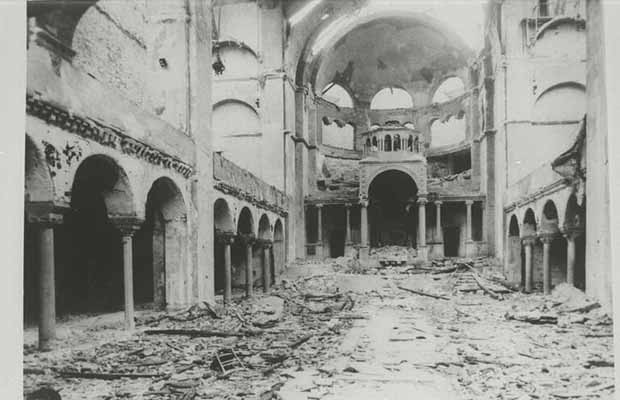
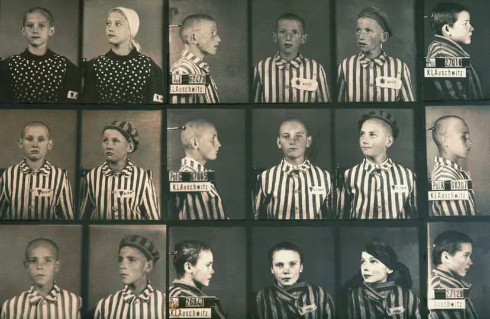

Ukratko o meni
Moje ime je Nejra Ćeranić, imam 22 godine i živim u Sarajevu. Trenutno studiram Kompjuterske nauke na Prirodno-matematičkom fakultetu Univerziteta u Sarajevu, a prije toga sam završila Drugu gimnaziju u Sarajevu. Smatram sebe upornom i društvenom osobom koja uživa u izazovima. U slobodno vrijeme, bavim se trčanjem i različitim sportovima, a također volim putovanja i upoznavanje novih ljudi. Matematika je oduvijek bila moja strast, što je i razlog zbog kojeg sam odabrala ovaj fakultet. Ovaj portfolio predstavlja moj rad, a nadam se da ćete uživati u njegovom sadržaju.
Lični podaci :
---
---
nejra1310@hotmail.com
OBRAZOVANJE
| Naziv | Godina početka | Godina završetka | Stepen stečenog obrazovanja | Adresa | Grad |
|---|---|---|---|---|---|
| Druga gimnazija Sarajevo | 2017. | 2021. | Srednja stručna sprema | Sutjeska 1 | Sarajevo |
| Prirodno-matematički fakultet | 2021. | / | Bachelor matematike i softverskog inžinjeringa | Zmaja od Bosne 33-35 | Sarajevo |
VJEŠTINE
| Tehničke vještine | Soft vještine |
|---|---|
| Programiranje (Python, C++) | Komunikacija |
| Razumijevanje algoritama i struktura podataka | Rješavanje problema i kritičko razmišljanje |
| Web razvoj (HTML, CSS) | Timski rad i suradnja |
| Poznavanje stranih jezika (engleski) | Emocionalna inteligencija |
MATURSKI RAD


Tema rada : Ličnosti koje su se suprostavljale nacističkoj vlasti
Datum izrade : Januar 2021.g.
Ime mentora : Emir Ševa
Podaci o ustanovi :
Naziv : Druga gimnazija Sarajevo
Adresa : Sutjeska 1
Grad : Sarajevo